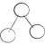
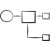

Computational synthetic biology
Tim Kucera · August 2026
Biology is becoming programmable. The software layer is still missing.
01
Biology is becoming programmable. Every lab still rebuilds the stack.
Every phase has its own set of challenges, integration is hard
Data in silos
Complex data structures
Incompatible workflows
Hardly reproducible benchmarks
Technically challenging
Untrusted predictions
High costs
Broken loop
Labs waste months on glue code, run experiments they cannot trust, and never close the design loop.
The problem is not a lack of data, models, or GPUs. We need systematic integration of the infrastructure stack.
We start as the reference platform for biomolecular ML evaluation — then expand into datasets, models, designs, and products.
Three layers — from core infrastructure to an agentic layer
Agentic Layer
Natural-language control across registries and tools
Platform Assets
Curated molecular datasets with standardization and QC
Reproducible benchmarks with public leaderboards

Plug-and-play models for prediction and molecule generation

Multi-step flows that chain models, scoring, and validation
Designer molecules with experimental validation data
Core Infrastructure
High-performance numerical computing for biological data
Config-driven orchestration for ML pipelines
Subscription and compute now. Content and services as the stack fills in.
They orchestrate tools. We own the stack underneath.
Towards full-stack computational bioengineering
H1 2026
Core stack
Fabric + Grumpy + Registries
Aug 2026
Today
Platform MVP in build · Partnering with wet-labs
Q4 2026
Launch & Challenge
Platform goes live · Protein Design Challenge
2027
Closing the loop
Experimental validation loops with lab partners
Founder of Imaginary Biolabs